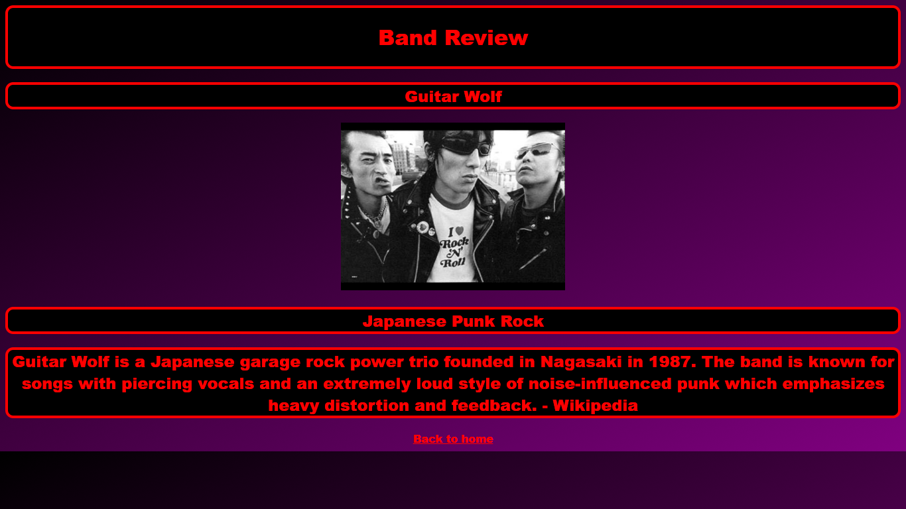

Band Reviews (MVC DEMO)Built w/ Java, Spring,
Thymeleaf, HTML, CSS.
Thymeleaf, HTML, CSS.
Born in Ohio. Graduated from Ohio University with Master's in Philosophy and the University of Akron with a Juris Doctor. Taught Philosophy and Logic for ten years primarily at Ohio University. Currently transitioning to the tech world and finishing a certificate in software development.